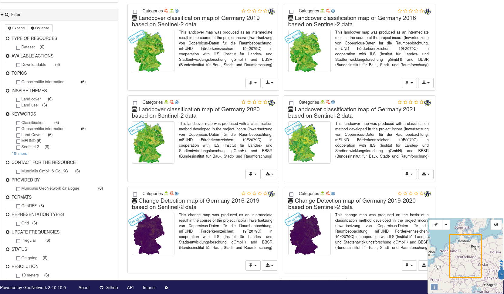
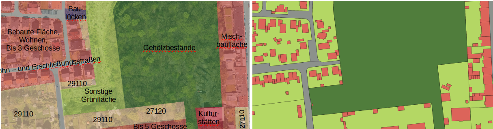
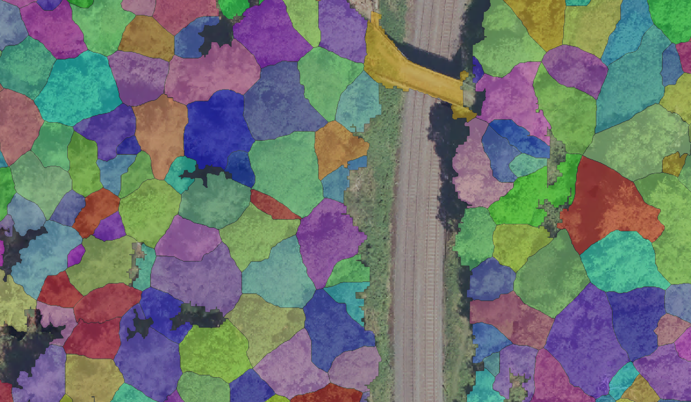
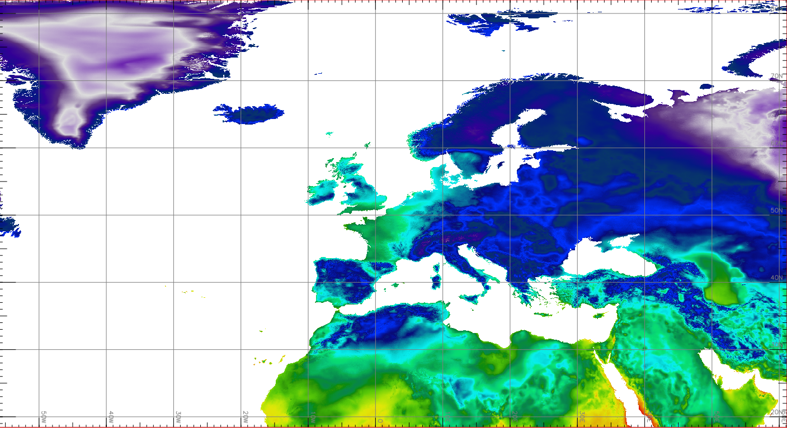

Landnutzungsklassifikation und Monitoring von Landnutzungsänderungen
- LULC-Daten aus Sentinel-2 mit 6 Klassen,
für 2016, 2019, 2020, 2021 (GNOS-Suche)
- "Change detection" zwischen verschiedenen Karten
- "incora" mFUND Projekt (FKZ: 19F2079C)

Gebäudeextraktion (Teaser)

- Für (Stadt)Planungzwecke ist es essentiell, genaue Daten des aktuellen Gebäudebestandes zu haben.
- Die Datensätze der "Hausumringe" stehen nicht in allen Bundesländer als offene Daten zur Verfügung.
- Ziel: automatisierte Extraktion aus Luftbildern und ggf. weiteren aktuellen Quellen (Lidar, nDOM, ...)
- Extraktion von Gebäuden
- Extraktion von begrünten Dächern
- Vortrag: "Gebäudedetektion auf Basis von Luftbildern und Punktwolken des Regionalverbands Ruhr" - https://pretalx.com/fossgis2023/talk/ZY9RXM/
Erkennung von Einzelbäumen (Teaser)

Höher aufgelöste Klimadaten-Zeitreihen

- Zeitreihen kontinentaler ERA5-Land Rasterdaten, die wir von 9 km Auflösung auf 1 km unter Verwendung der CHELSA-Daten verbessert haben:
- Temperatur (2000- 2021)
- Niederschlag (2000- 2021)
- Relative Luftfeuchtigkeit (2000- 2021)- berechnet nach Wright 1997
- Motivation: Berechnung von Hitzeinsel-Risiko, Ableitung von regionalen Trends, menschliches Wohlbefinden (Thermoregulation des Körpers)